01
Desorganização
As informações estavam espalhadas, dificultando a leitura e o controle operacional do projeto social.
O VidaPlena Nexus foi desenvolvido para a ONG Vida Plena com foco em organização de dados, histórico de participação, cadastro rápido e automação de processos sem depender de programação tradicional.
A ONG Vida Plena precisava organizar melhor seus dados de eventos, beneficiários e histórico de participação. Antes, essas informações eram controladas por planilhas manuais e grupos de WhatsApp, o que gerava desorganização, duplicidade e dificuldade de acompanhamento.
As informações estavam espalhadas, dificultando a leitura e o controle operacional do projeto social.
O mesmo beneficiário podia aparecer em mais de um lugar, reduzindo a confiabilidade dos registros.
Não havia uma forma clara de visualizar em quais eventos cada beneficiário havia participado.
O projeto foi desenvolvido com Airtable como banco de dados visual principal, aproveitando tabelas relacionadas, interface, formulários, views e automações em um único ambiente. O objetivo foi criar uma solução simples, organizada e acessível para usuários não técnicos.
Criar um sistema visual capaz de cadastrar beneficiários, criar eventos, registrar inscrições, manter histórico visível e reduzir falhas operacionais.
A modelagem foi baseada em três entidades principais, com a tabela de inscrições resolvendo o relacionamento muitos-para-muitos entre beneficiários e eventos.
Armazena nome completo, idade, contato, e-mail, região e o histórico de inscrições.
Registra nome do evento, categoria, data, horário, local, região, capacidade e status.
Faz a ligação entre beneficiários e eventos, registrando ID automático, data da inscrição, canal e status.
O sistema foi planejado para entregar organização operacional, facilidade de uso e demonstração prática de um banco visual funcional.
Abaixo estão algumas das evidências visuais da construção do projeto no Airtable, incluindo tabelas, views, dashboard, interface, formulários e automação.
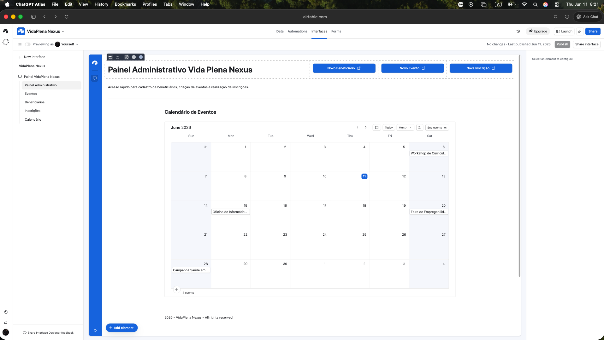
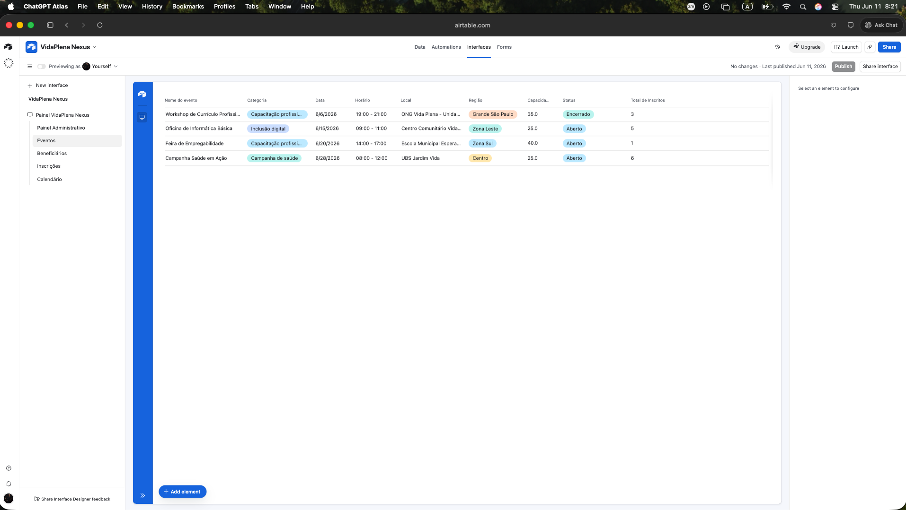
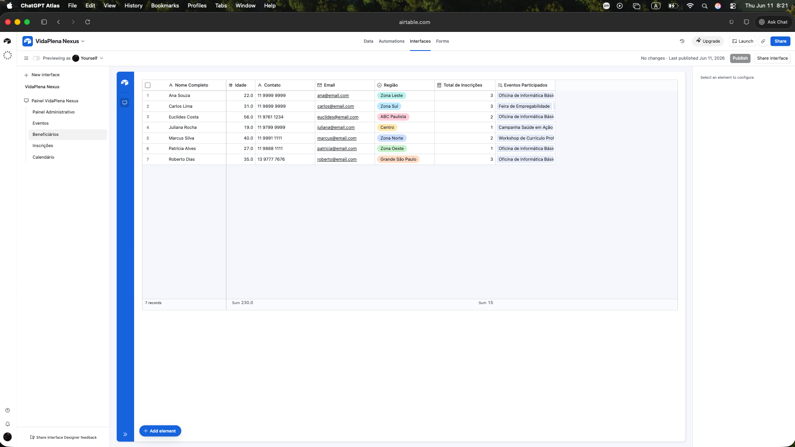
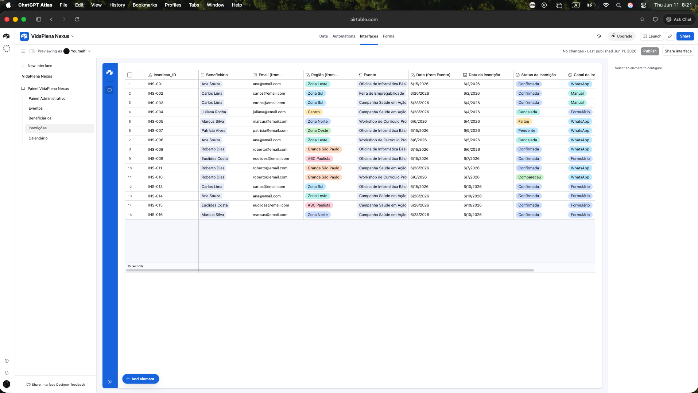
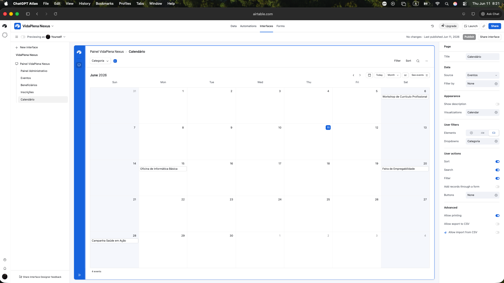
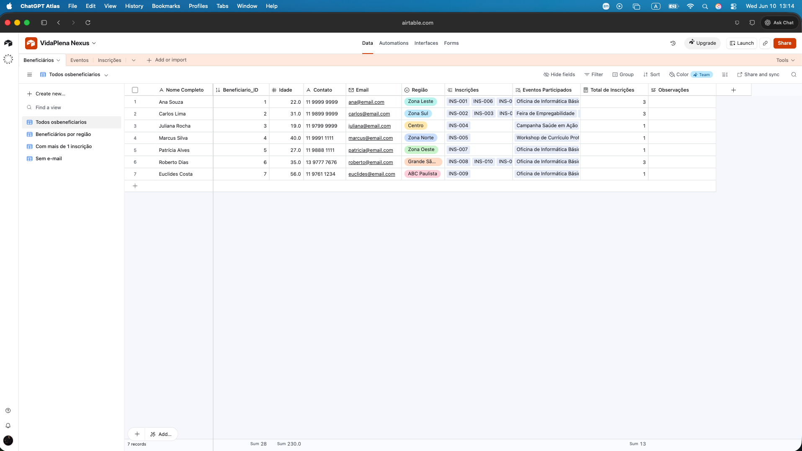
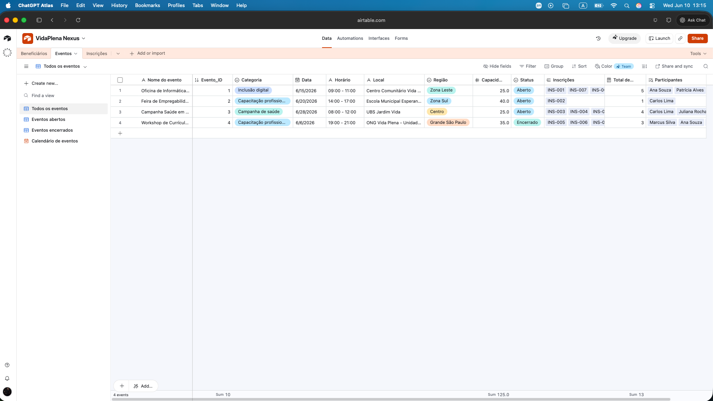
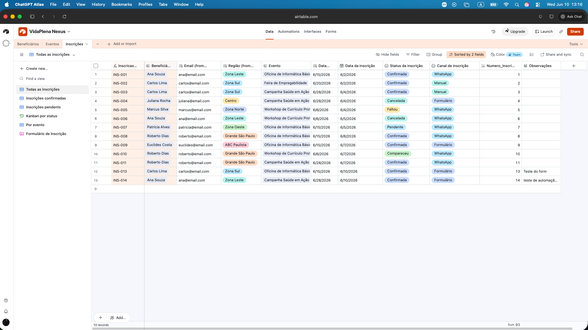
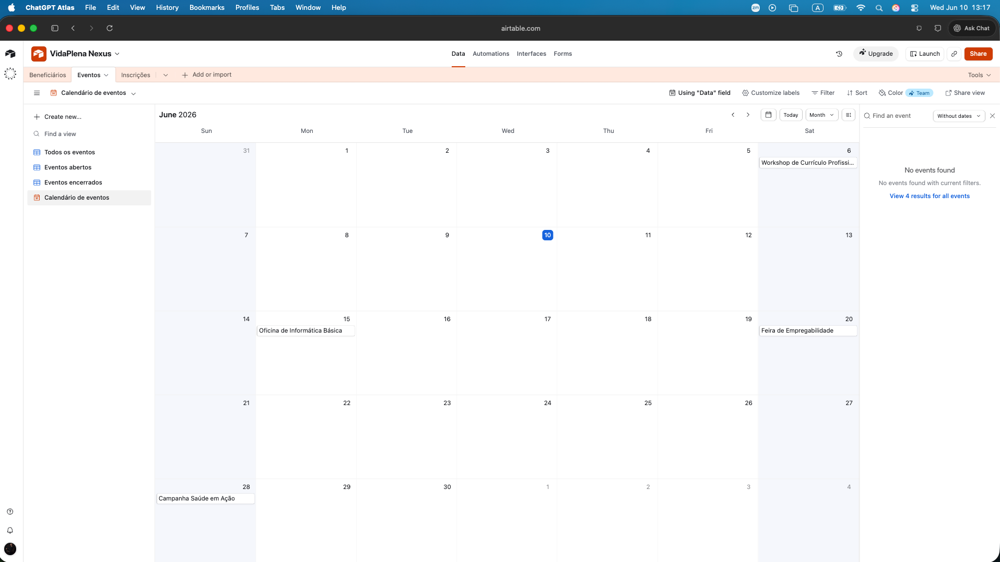
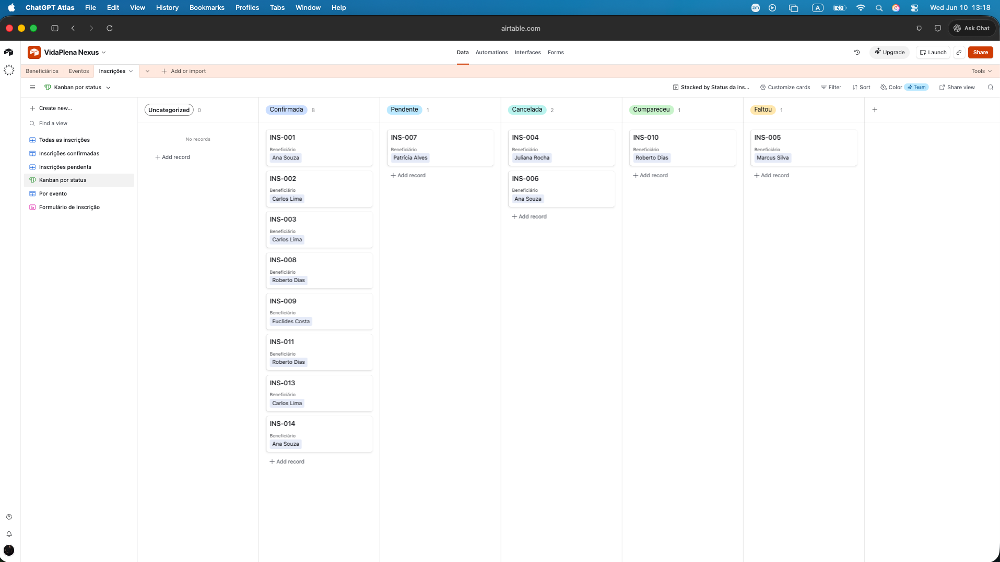
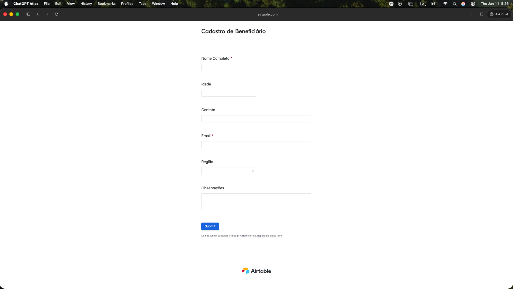
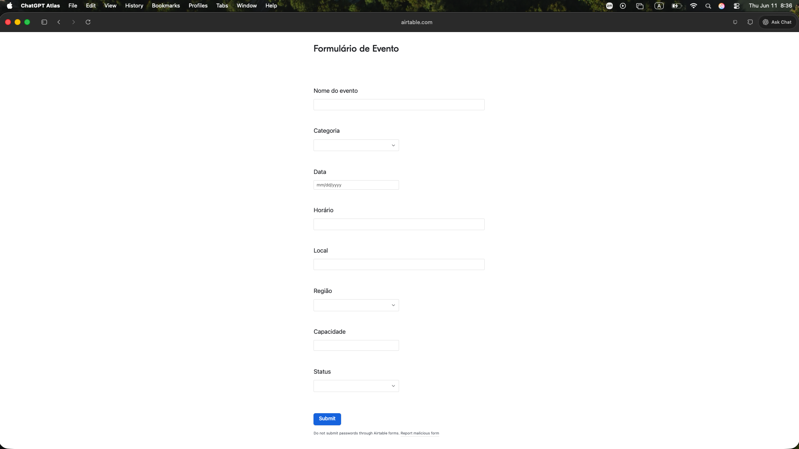
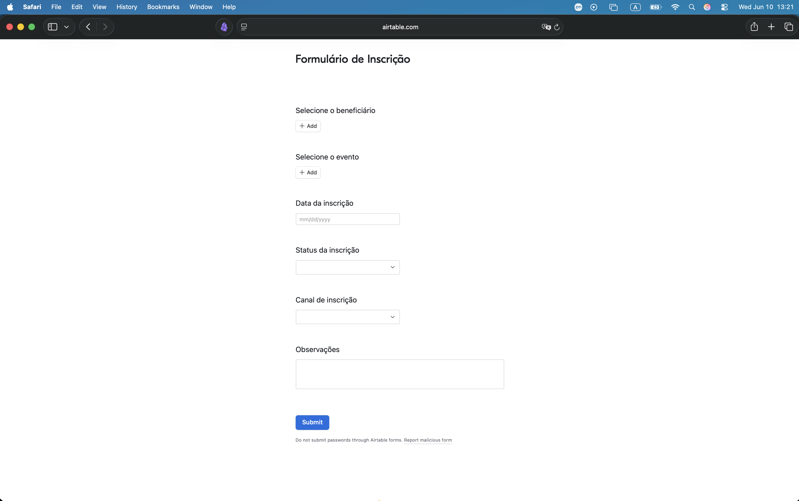
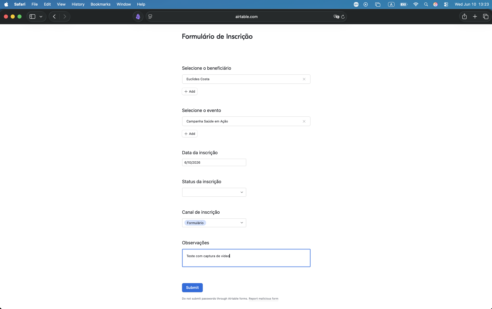
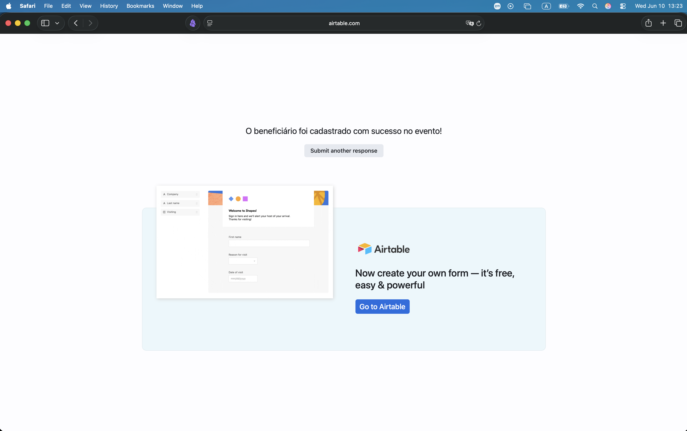
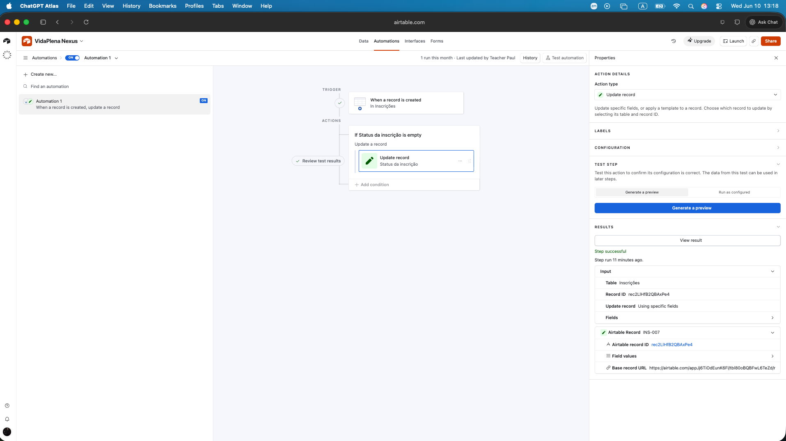
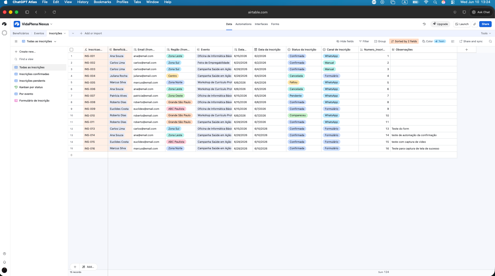
O projeto foi estruturado para atender ao escopo acadêmico com banco visual, visualizações, formulários, interface, automação funcional e demonstração com dados de teste.
Foram criadas tabelas relacionadas para beneficiários, eventos e inscrições, com campos automáticos, lookups e contagens de relacionamento.
Foi criada uma página inicial com calendário e botões de ação rápida para cadastro de beneficiários, criação de eventos e novas inscrições.
Foram implementados formulários separados para beneficiário, evento e inscrição, com testes reais de funcionamento.
Uma automação funcional foi criada e testada no Airtable para atualizar automaticamente o status da inscrição conforme a lógica definida.
O projeto foi desenvolvido em Airtable e complementado com uma página pública em GitHub Pages para apresentação visual e documentação.
Clique no botão abaixo para acessar a demonstração do projeto no Airtable.
Abrir projeto no AirtableEsta página foi construída com HTML, CSS e JavaScript e publicada no GitHub Pages como apoio visual à entrega acadêmica.
Voltar ao topo